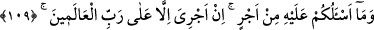
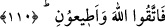

108. Artık Allah’a karşı gelmekten sakının ve bana itâat edin.
“Artık Allah’a karşı gelmekten sakının” Allah’tan korkun “ve”size emrettiğim tevhîd
ve Allah’a tâatte “bana itâat edin.” Çünkü ben size hiyanet etmem ve sizin için kötülük
istemem.
109. Buna karşı sizden hiçbir ücret istemiyorum. Benim ecrimi verecek olan,
ancak âlemlerin Rabbidir.
“Buna karşı” peygamberliği yerine getirme karşılığında “sizden hiçbir ücret
istemiyorum.” Çünkü peygamberler ücret istemedikleri zaman bu, kendilerini tasdîke
daha yakın ve töhmetten daha uzak kılar.
“Benim ecrimi” üstlendiğim görevin sevâbını/karşılığını ve ücretini “verecek olan,
ancak âlemlerin Rabbidir.” Çünkü Allah için iş yapan, ücretini Allah’tan başkasından
taleb etmez.
Bununla peygamberlerin vârisleri olan âlimlerin, peygamberlerinin edebleriyle
edebleneceklerine, dolayısıyla onların ilimlerini yayarken insanların bir şey talep
etmeyeceklerine, onlara öğretmelerine, nasihat ve öğüt vermelerine karşılık
kendilerinden bir menfaat sağlamayacaklarına işâret etmektedir. Her kim dîni anlatıp
yayma, vaaz ve nasihatte bulunma konusunda kendisini dinleyen müslümanlardan
menfaat sağlarsa, Allah o insanlara dinledikleri şey hususunda bereket vermez. O
âlimlerin de insanlardan aldıkları şeylerin bereketi olmaz. Az bir dünya metâına
karşılık dinlerini satarlar. Sonra onlar içinde bunda bir bereket de olmaz.
Sa’dî (k.s.) der ki:
Tefsir bilen bir adam zararlı çıkar
İlmi ve edebi ekmek karşılığı satarsa
110. O halde Allah’tan korkun ve bana itaat edin.
“Fâ” harfi, kendisinden sonrakini Nuh (a.s.)’ın tamahtan uzak olması üzerine bina
etmek içindir. Bu cümlenin tekrarı tekîd için, hem de emânet ve maddî karşılık